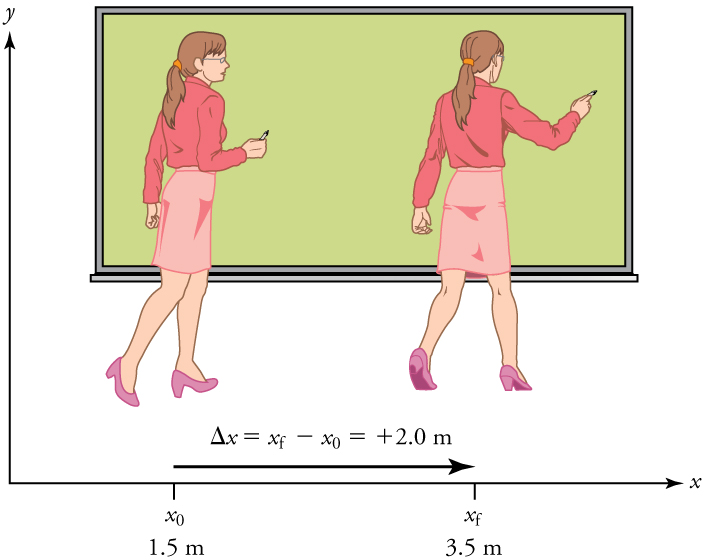
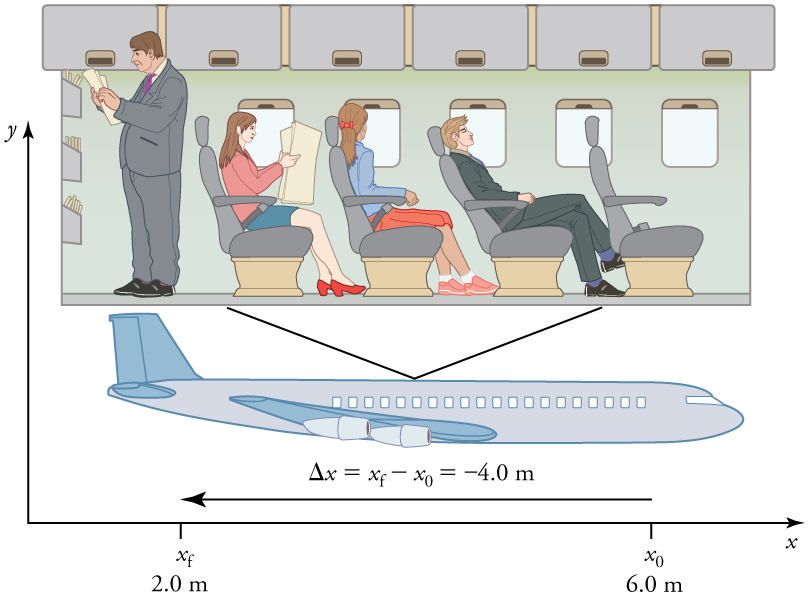
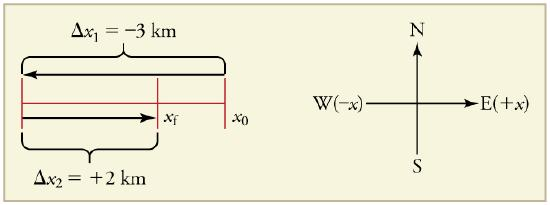

Displacement
Displacement — Overview
Learning Objectives
- Define position, displacement, distance, and distance traveled.
- Explain the relationship between position and displacement.
- Distinguish between displacement and distance traveled.
- Calculate displacement and distance given initial position, final position, and the path between the two.
Figure 1.1: These cyclists can be described by their position relative to buildings and a canal. Their motion is described by their change in position, or displacement, in the frame of reference.
Deeper Dive
Position
In order to describe the motion of an object, you must first be able to describe its position—where it is at any particular time. You need to specify its position relative to a convenient reference frame. Earth is often used as a reference frame. For example, a rocket launch is described in terms of the position of the rocket with respect to the Earth, while a professor’s position could be described in relation to a nearby whiteboard.
Displacement
If an object moves relative to a reference frame, then the object’s position changes. This change in position is known as displacement.
**Definition: ** Displacement is the change in position of an object: $$ \Delta x = x_f - x_0 $$ where is displacement, is the final position, and is the initial position.
In physics, the uppercase Greek letter (delta) always means “change in” whatever quantity follows it; thus, means change in position. The SI unit for displacement is the meter (m).

Figure 1.2: A professor paces left and right. The +2.0 m displacement of the professor relative to Earth is represented by an arrow pointing to the right.
Figure 1.3: A passenger moves toward the rear of the plane. The -4.0 m displacement is represented by an arrow toward the rear.Direction and Magnitude
In one-dimensional motion, direction is specified with a plus (+) or minus (-) sign.
- Professor's calculation: ,
- Passenger's calculation: ,
Technical Details
Distance vs. Distance Traveled
While displacement has a direction, distance does not.
- Distance is the magnitude or size of displacement between two positions.
- Distance traveled is the total length of the path traveled between two positions.
**Misconception Alert: ** The distance traveled can be much greater than the magnitude of the displacement. For example, if a professor walks 150 m back and forth but ends up only 2.0 m away from her starting point, her displacement is +2.0 m, but her distance traveled is 150 m.
Exercise 1.1
A cyclist rides 3 km west and then turns around and rides 2 km east.
- What is her displacement? (assuming East is positive).
- What distance does she ride? .
- What is the magnitude of her displacement? .

Figure 1.4Section Summary
- Kinematics is the study of motion without considering its causes.
- Displacement is the change in position ($\Delta x = x_f - x_0$). It has both magnitude and direction.
- Distance is the magnitude of displacement.
- Distance Traveled is the total length of the path taken.
Glossary
- Kinematics: The study of motion without considering its causes.
- Position: The location of an object at a particular time.
- Displacement: The change in position of an object.
- Distance: The magnitude of displacement between two positions.
- Distance traveled: The total length of the path traveled between two positions.